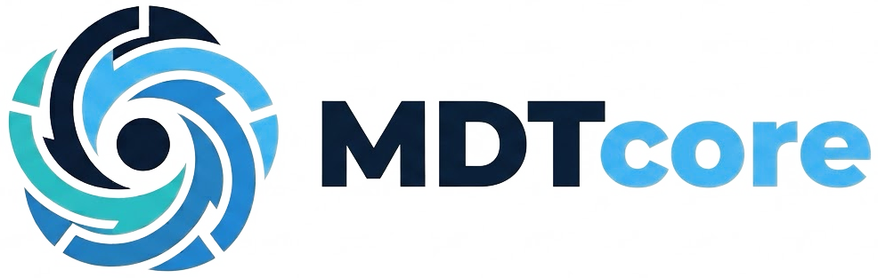
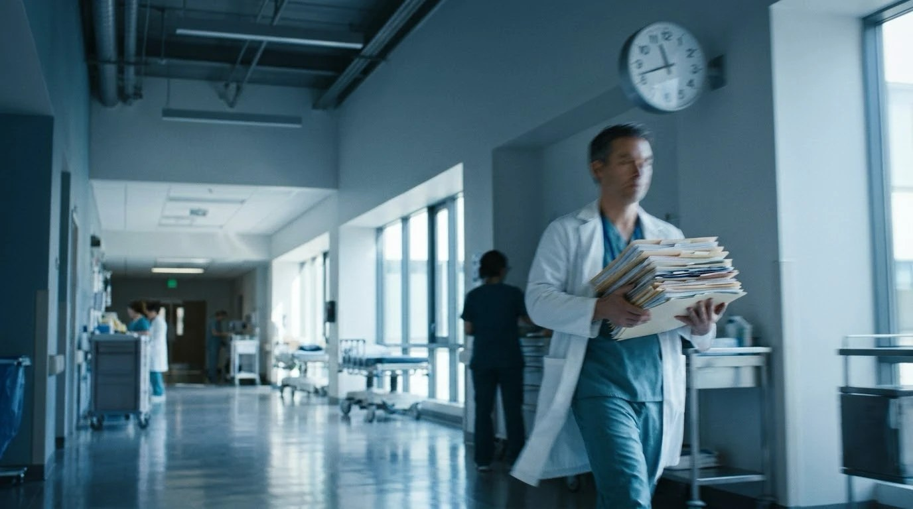
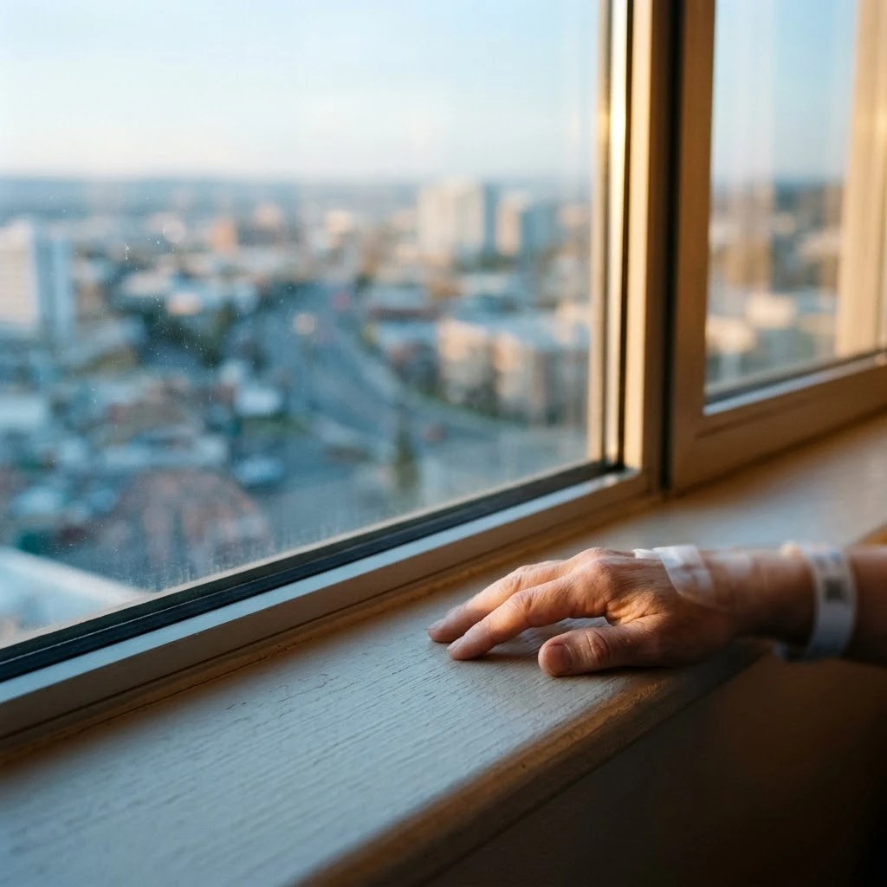
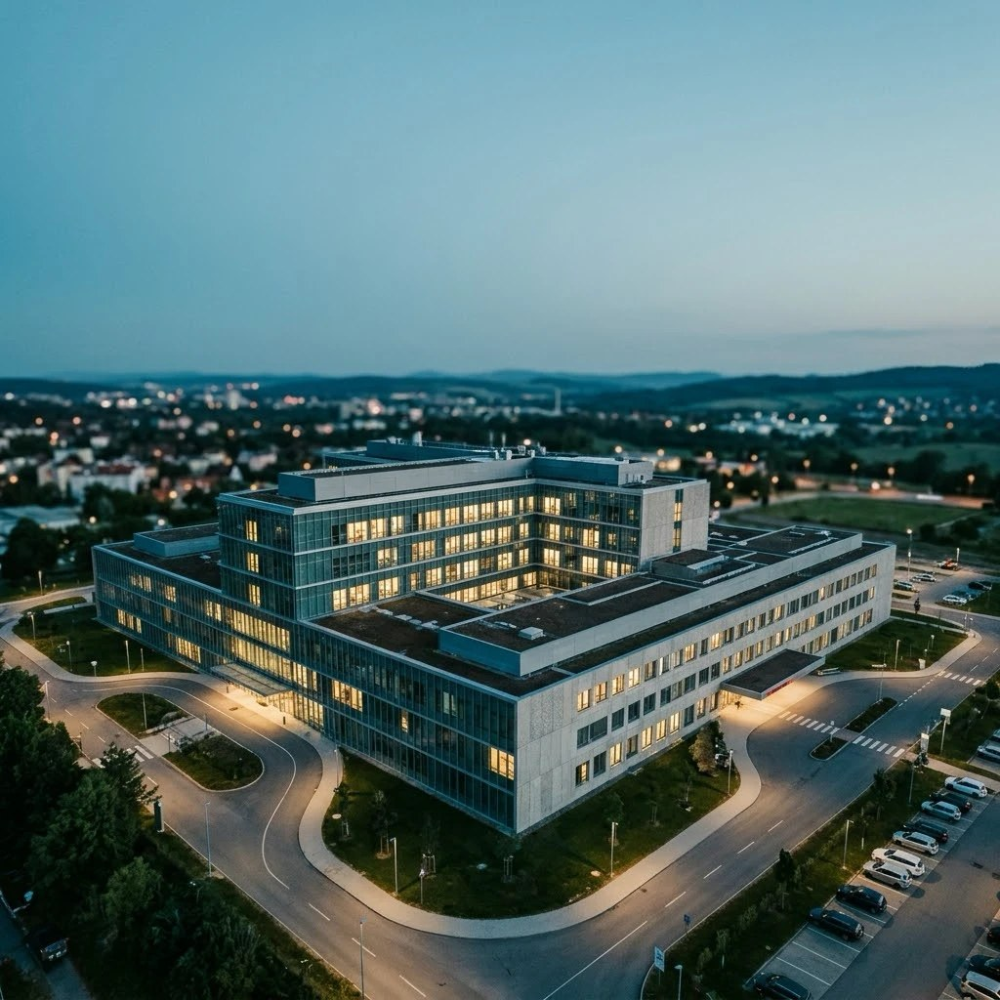

Rakathon 2026 · funkční prototyp
Rychlejší rozhodnutí komise
Méně ztracených hodin lékařů.
Orientace do 30 sekund
Citace u každého údaje
Lékař rozhoduje

Designed by doktoři · made by studenti
Rakathon 2026 · funkční prototyp
Rychlejší rozhodnutí komise
Méně ztracených hodin lékařů.
Orientace do 30 sekund
Citace u každého údaje
Lékař rozhoduje

Designed by doktoři · made by studenti

Dnes
3–5
minut na jednoho pacienta, než komise rozhodne
5
specialistů u jednoho stolu
ROKY
historie pacienta v textu nálezů
Řešení
Podklad z dat pacienta za pár sekund
✓ Citace zdroje u každého údaje
✓ Rozpory a chybějící vyšetření nahoře
✓ Závěr potvrdí lékař a zapíše se do nemocnice
Postaveno na standardu FHIR a nemocniční databázi InterSystems IRIS. AI jen připravuje.
Ukázka v aplikaci
Každý lékař vidí to, co potřebuje
Pořadí podkladu nastaví předseda komise, nebo si ho každý lékař upraví pro sebe.

Dnes a v MDTcore
22 374 znaků, nebo 16 údajů
25 tučných zvýraznění, které lékař hledá v textu. A to je jen jeden z podkladů.
Peníze
Čas lékařů je náklad státu
25–42
hodin lékařského času na 100 případů
×
500–680
Kč za hodinu lékaře (hrubá mzda, s odvody)
Na 100 případů je to 12–29 tisíc Kč času lékařů. Kolik z něj lze skutečně uvolnit, ukáže pilot.
Kontext: v ČR bylo v roce 2023 nově diagnostikováno 65 242 případů zhoubných novotvarů, tedy cca 5 400 pacientů měsíčně (ČSÚ).
Pacienti a životy
Kolik pacientů ušetříme, změří pilot
✓ Kolik případů ročně dostane víc času na rozhodnutí: ukáže pilot
✓ Kolik rozporů nebo chybějících vyšetření se najde před jednáním: ukáže pilot
✓ Kolik z nich ovlivní léčbu: pilot s lékaři ověří
Poctivě
Počet zachráněných životů dnes neumíme doložit. Nezveřejňujeme odhad, který by nebyl podložený.

Proč čas lékařů znamená pacienty
Kratší příprava, dřívější léčba
Kratší příprava → víc případů na zasedání → kratší čekání na rozhodnutí → dřívější léčba.
Metaanalýza 34 studií (1,27 mil. pacientů): delší zpoždění léčby spojeno s vyšší úmrtností u 13 ze 17 diagnóz.
Poctivě: souvislost, ne přímý důkaz. Pilot měří dny od žádanky do rozhodnutí.
Proč to koupit
Tři kupci, jedno měření
Nemocnice
Pracuje nad standardem FHIR R4. Závěr komise se zapisuje s Provenance.
Stát
Ministerstvo zveřejnilo indikátory onkologické péče, mezi nimi dobu do zahájení léčby.
Ekonomové
Úspora = pacienti × minuty × cena hodiny. Pilot dodá všechna tři čísla.

Pilot na jedné komisi měří čtyři věci
Minuty na přípravu · dny od žádanky do rozhodnutí · počet případů · počet nalezených rozporů.
Zdroje: MZ: první indikátory onkologické péče · BMJ 2020, zpoždění léčby
Pilot na jedné komisi
Změříme čas a peníze. Pak budeme mluvit o číslech.
Demo a kontakt
Živé demo na vyžádání · Tým MDTcore, Rakathon 2026
Živé demo na vyžádání. Data jsou syntetická.
Designed by doktoři · made by studenti